Claim boundary. The B0–B6 matrix is synthetic analytical BPR evidence. SUMO evidence is a microscopic synthetic smoke study. Safety metrics are surrogate conflict indicators, not crash probabilities. Demand on the real OSM topology is synthetic.
Can truthful, voluntarily accepted route recommendations use heterogeneous private preference slack to reduce network externality without violating declared regret and safety-surrogate constraints?
The controller observes explicit count/density/flow/speed state, predicts horizon route attributes, solves a constrained first-action MPC plan, offers a route, samples a separately parameterized acceptance model, executes only accepted routes, and observes again. Exact enumeration remains a small-instance oracle; B5 is a HiGHS linearized MIP baseline.
240 screening cases selected the focused factors; 60 paired focused rows compare B0–B6 across two-route, merge, signalized, and analytical ring families. Seeds are matched. The research registry contains config, commit/dirty state, versions, timestamps, hardware, and hashes.
| ID | Definition |
|---|---|
| B0 | static_free_flow_fastest |
| B1 | dynamic_eta_only_best_response |
| B2 | preference_only_private_best |
| B3 | small_instance_system_optimal_oracle |
| B4 | greedy_vde |
| B5 | linearized_constrained_mip |
| B6 | receding_horizon_acceptance_aware_closed_loop |
| Hypothesis | Status | Primary evidence |
|---|---|---|
| H1 | not_supported | Beneficial low-regret diversion opportunities |
| H2 | not_supported | B1−B6 paired TTT CI [-1072.263, -447.772] |
| H3 | NOT TESTED | No matched microscopic adaptive-vs-ETA probability matrix |
| H4 | PARTIAL | Microscopic SSM/trajectory smoke only; no matched policy non-inferiority |
| H5 | exploratory_only | In-sample exploratory variance/tail association |
| H6 | not_supported | Descriptive feedback stability only |
| H7 | NOT TESTED | RL gate did not authorize RL |
synthetic microscopic ring fixture; surrogate conflicts are not crash probability
The detector found 2 candidate wave events in one synthetic ring run. This does not establish prevention. SSM output and full trajectory-derived distributions are stored, including TTC, DRAC, hard braking and CVaR.
H1 status: not_supported. All B6 focused rows satisfy the configured regret bound: True.
RL not introduced because deterministic/receding-horizon optimization was sufficient under the tested, declared small-instance conditions. Untested larger-scale and nonstationary settings remain limitations rather than justification to insert RL.
B0/B1/B2/B4/B6 separate static routing, ETA response, preference-only choice, externality-aware greedy assignment, and feedback-aware MPC. This is a policy-layer ablation, not a complete component-wise causal ablation. B5 exposes linearization failure cases; B6 enumeration is explicitly restricted to correctness scale. H3, matched microscopic H4, full preference-drift traffic evaluation, and calibrated real demand remain unresolved.
OSM topology valid: True; nodes: 278; edges: 427; alternate routes: 3. Geometry and ODbL provenance are preserved. Demand is synthetic on real topology.
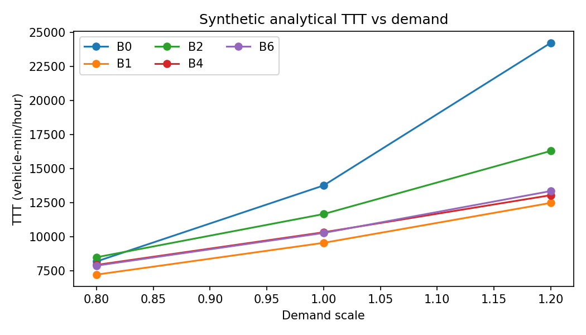
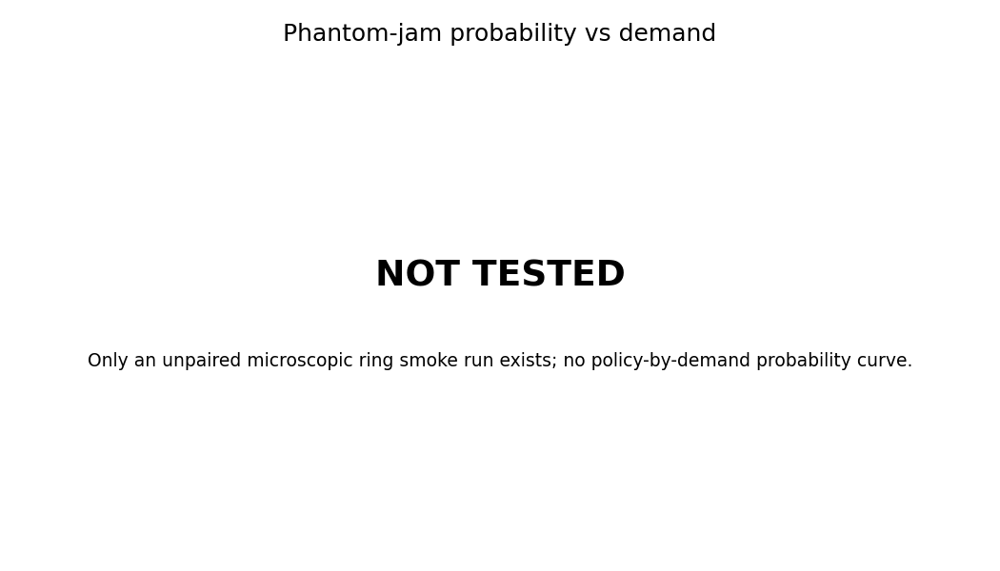
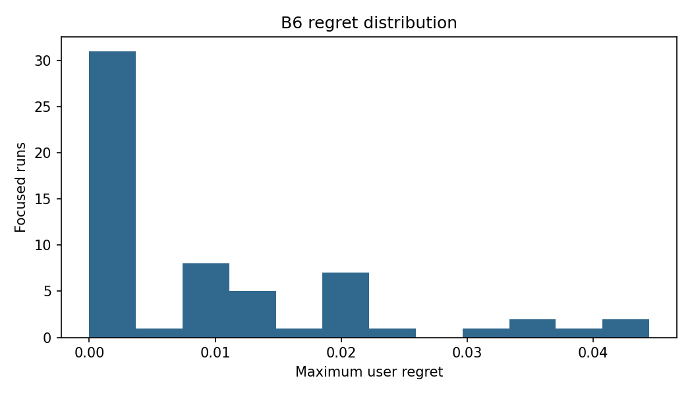
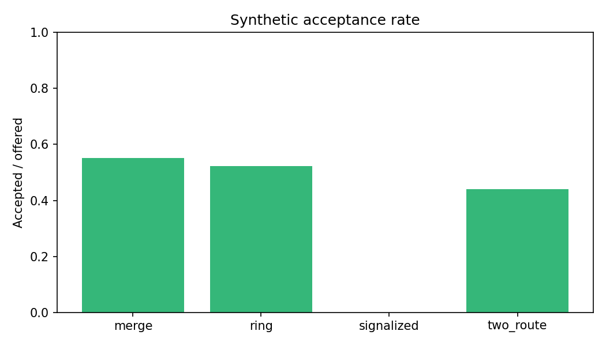
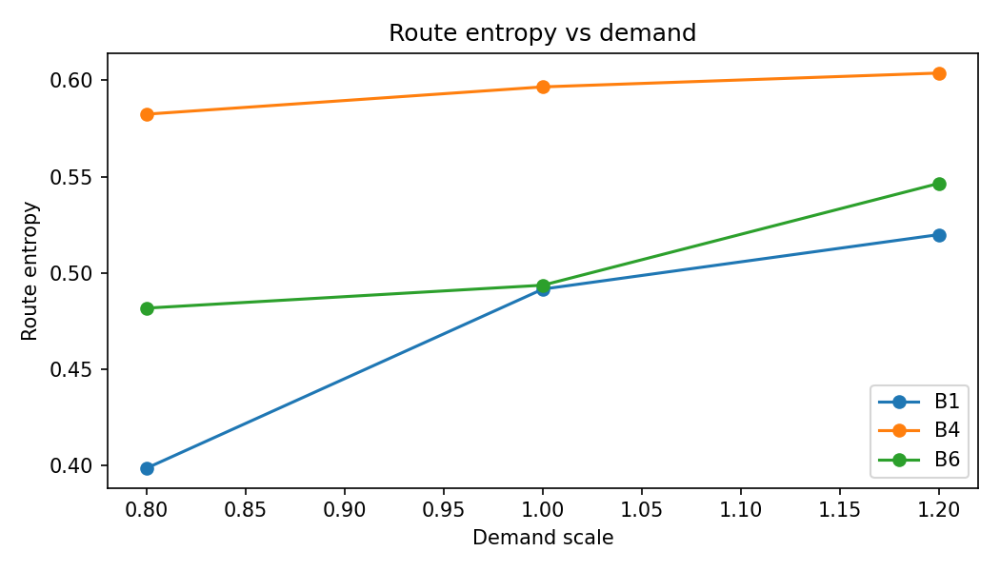
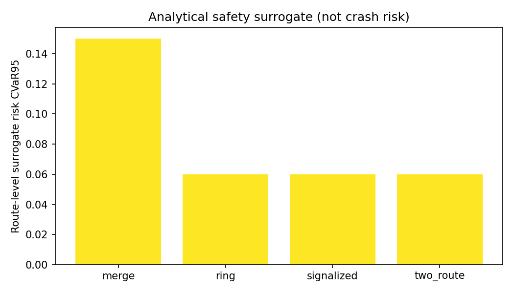
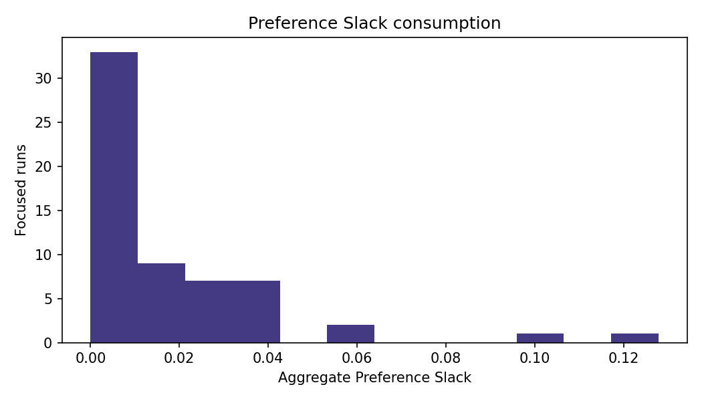
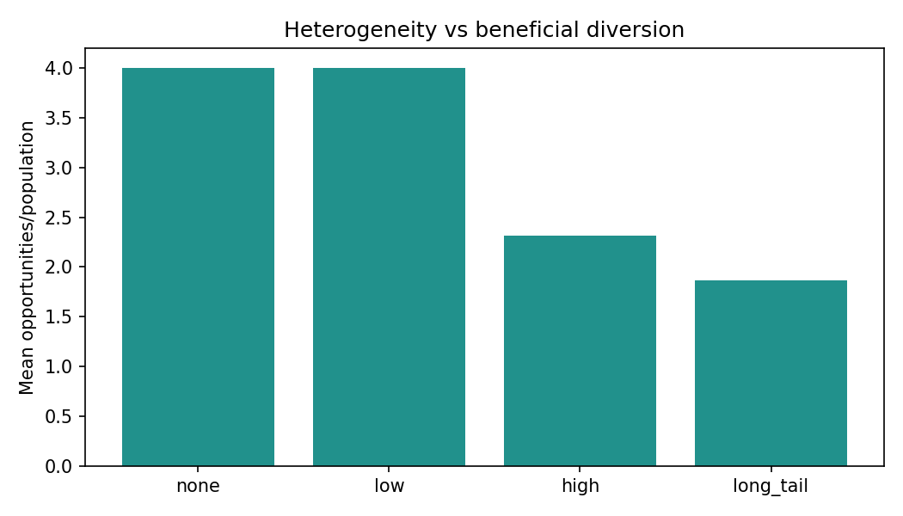
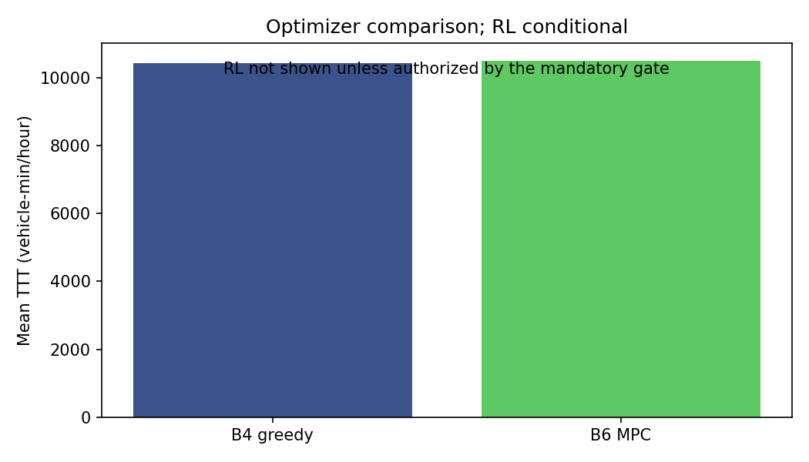
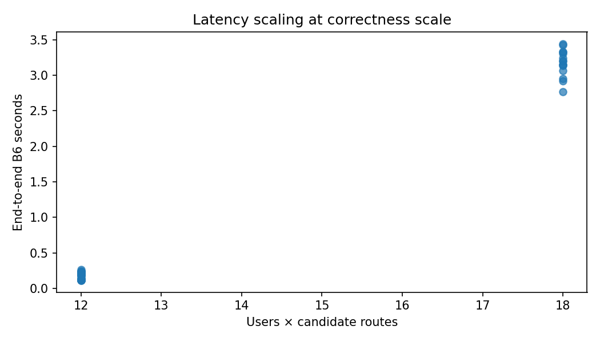
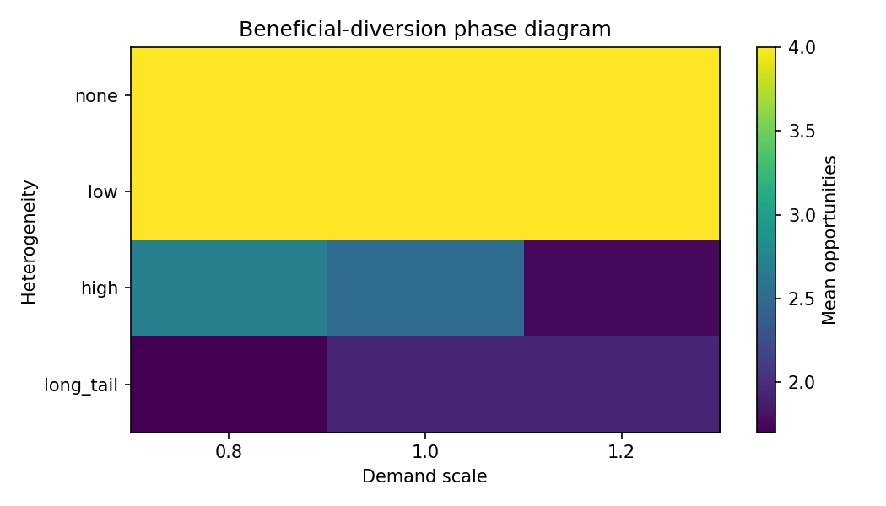
Run make lint test benchmark simulation-test research rl-gate rl-evaluate report. Heavy microscopic full matrices are not silently substituted by analytical output. Valid registry runs included: 7.
CONCORDIA demonstrates a working truthful, acceptance-separated, constrained closed loop and synthetic analytical low-regret coordination opportunities. It does not yet establish statistically meaningful microscopic phantom-jam prevention or real-world transfer. RL outcome: A.